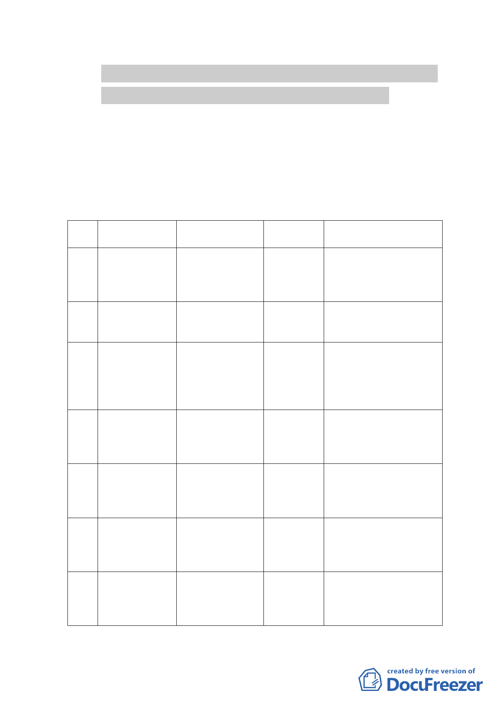

土地（徵求參與「促進都市再生 2010 年臺北好好看」開
發計畫 7 處基地回復原都市計畫案）細部計畫案
案情概要說明：
一、計畫位置：
本計畫範圍係申請「徵求參與『促進都市再生2010年臺北好
好看』開發計畫案」中，因無法依臺北好好看規定時程開工，
且已逾1年緩衝時間之7案，基地位置及面積如下表
基地
編號
1
2
3
4
5
6
7
名稱
地號
三元街寧波路
口（金山石建
設）
中正區永昌段四
小段48 地號等
160筆土地
建國民生路口
（國泰人壽）
民生社區（誠美
建設）
中山區長春段二
小段125-1 地號
等53 筆土地
松山區民生段42
地號等26 筆土地
松仁路底（立偕 信義區吳興段三
建設）
小段196 地號等
17筆土地
仁愛杭州路口 中正區中正段二
東南側（合康工 小段48 地號等37
程）
筆土地
景美國中東側
（鼎昌建築）
文山區景美段三
小段295 地號等
55筆土地
民權東路6段
（立偕建設）
內湖區文德段四
小段16 地號等32
筆土地
面積
（平方公尺）
5,100.55
6,845.18
5,843
5,491
5,442.38
9,827
7,760
位置
位於三元街、和平西路二
段70巷、和平西路二段70
巷6 弄及和平西路二段
90 巷所圍街廓。
位於建國北路二段、民生
東路三段及合江街70 巷
所包圍之街廓內。
北鄰富民生態公園、南接
新東街31 巷與臺灣郵政
87 支局為鄰，東臨新東
街與民生國中相望，西接
民生東路五段177 巷。
位於信義區松仁路底，由
松仁路、松仁路281 巷及
松仁路315巷所圍之完整
街廓。
位於仁愛路二段、仁愛路
二段20 巷、仁愛路二段
38 巷及杭州南路一段
101 巷所圍之街廓。
位於文山區景興路以
西、景華街52 巷以東、
景興路108 巷以南、景中
街以北所圍範圍內。
北鄰民權東路六段、西鄰
民權東路六段324 巷、東
至廣場、南接成功路二段
320 巷所圍之街廓
-4-